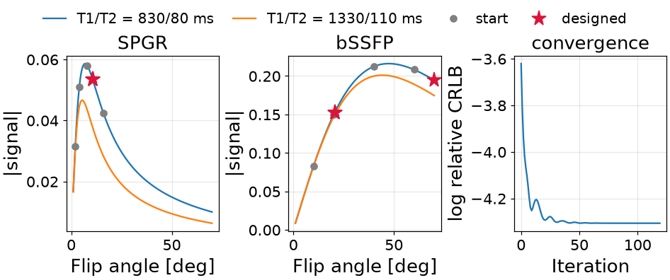
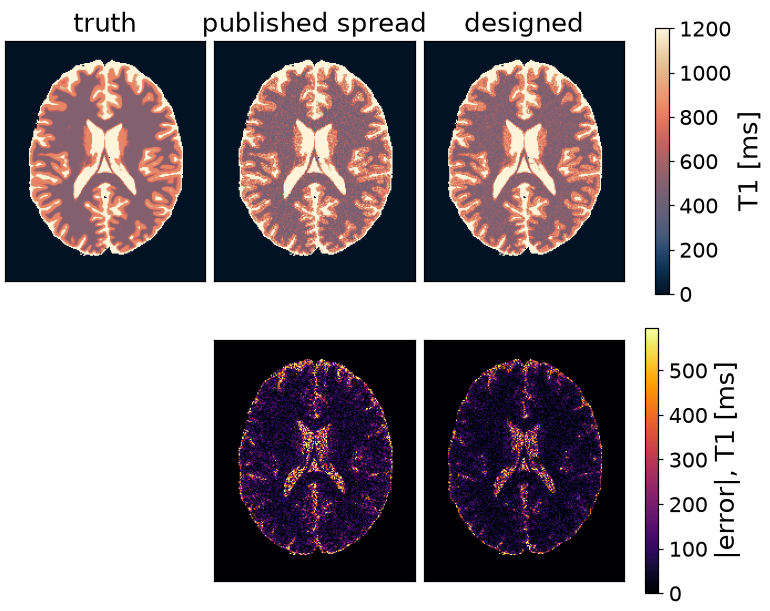
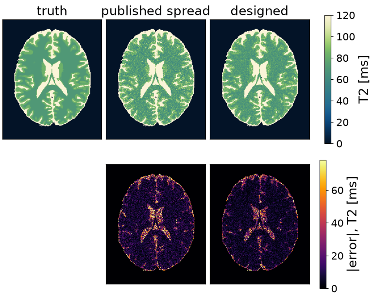

Note
Go to the end to download the full example code or to run this example in your browser via Binder.
Designing a joint relaxometry protocol#
The scope of this notebook is to choose the flip angles of a DESPOT protocol so that a joint fit of T1 and T2 is as precise as possible [1].
DESPOT estimates T1 from spoiled gradient-echo scans at different flip angles and T2 from balanced SSFP scans. Fitting them jointly uses all the data for both parameters. The cost is a Cramer-Rao bound: the lowest variance an unbiased estimate can have, given the derivative of each signal with respect to every parameter estimated.
The two closed-form sequences being designed, the three pieces a design is
stated in, and crlb(), which is the cost.
import time
import torch
import torchsim
from torchsim.optim import Bounded, SequenceDesign
from torchsim.simulators import SPGRSimulator, bSSFPSimulator
Sequences#
A design problem is three pieces, and the first is a simulator with the tissue it is designed for already fixed on it, so only the parameters under design are left to give. Both sequences here are closed forms, constructed and called exactly as a state-machine sequence would be.
# White and grey matter at 3 T -- the design is for both at once.
T1_MS = torch.tensor([830.0, 1330.0])
T2_MS = torch.tensor([80.0, 110.0])
# Noise standard deviation, as a fraction of the fully relaxed magnetization.
NOISE = 0.005
spgr = SPGRSimulator(TE=2.0, TR=6.0, T1=T1_MS, T2star=T2_MS, M0=1.0, B0=0.0)
ssfp = bSSFPSimulator(TE=2.5, TR=5.0, T1=T1_MS, T2=T2_MS, M0=1.0, B0=0.0)
Cost#
Four parameters are estimated jointly: T1, T2, the proton density and the off-resonance. The last two are nuisances, estimated because they affect the data rather than because the design is for them.
The two sequences carry different information. The spoiled steady state in closed form depends on T2* rather than T2, so its T2 row is exactly zero. Each block is blind to something and the Fisher matrix adds them up.
JOINT = ("T1", "T2", "M0", "B0")
def rows(simulator, **design):
"""The Jacobian rows for every joint parameter, zero where the block is blind."""
present = [name for name in JOINT if name in simulator.exposes]
_, jacobian = simulator.jacobian(present, **design)
placed = jacobian.new_zeros(jacobian.shape[:-2] + (len(JOINT), jacobian.shape[-1]))
where = torch.tensor([JOINT.index(name) for name in present])
return placed.index_copy(-2, where, jacobian)
def bounds(spgr_flip, ssfp_flip):
"""The Cramer-Rao bound on each joint parameter, for each design tissue."""
together = torch.cat(
(rows(spgr, flip=spgr_flip), rows(ssfp, flip=ssfp_flip)), dim=-1
)
return torchsim.crlb(together, noise_variance=NOISE**2)
Dividing each bound by its own parameter squared makes the terms dimensionless, so a 100 ms T2 and a 1000 ms T1 are weighted by how well they are known rather than by how large they are. The logarithm makes the gradient relative, so the design does not depend on the noise level.
def precision(spgr_flip, ssfp_flip):
"""Relative variance of T1 and T2, averaged over the design tissues."""
bound = bounds(spgr_flip, ssfp_flip)
relative = bound[..., 0] / T1_MS**2 + bound[..., 1] / T2_MS**2
return relative.mean().log()
Design#
Four scans of each kind, starting from a spread of angles. The limits are what the scanner will play and are enforced exactly.
spgr_start = torch.tensor([2.0, 4.0, 8.0, 16.0])
ssfp_start = torch.tensor([10.0, 20.0, 40.0, 60.0])
design = SequenceDesign(
precision,
spgr_flip=Bounded(spgr_start, 1.0, 40.0),
ssfp_flip=Bounded(ssfp_start, 1.0, 70.0),
)
start = time.time()
result = design.minimize(iterations=120, learning_rate=0.3)
design_time = time.time() - start
spgr_designed = result.parameters["spgr_flip"]
ssfp_designed = result.parameters["ssfp_flip"]
What it buys, as the standard deviation of each estimate in percent of the value itself.
published spread sigma(T1)/T1 = 11.0%, 12.9% sigma(T2)/T2 = 10.1%, 12.1%
designed sigma(T1)/T1 = 7.4%, 8.9% sigma(T2)/T2 = 7.4%, 9.1%
designed in 4.9 s
Optimized schedule#
What the scanner is handed: eight scans, four spoiled and four balanced, each differing only in flip angle. Before and after.

<matplotlib.legend.Legend object at 0x7f4dd8c0c470>
Optimized flip angles#
The design collapses eight distinct angles onto three and repeats them. The information sits at a few places on each curve, and a fixed number of scans is best spent there rather than sampling the curve evenly.
The SPGR angle lands above the Ernst angle of both tissues, where the curve separates the two T1 values most sharply; the peak itself is where the signal is largest and says least. The two bSSFP angles sit either side of the steady-state maximum, which is what makes the pair sensitive to T2. The upper one is against its limit rather than at an interior optimum, and that limit is what the deposited RF power allows.

Effect on the maps#
The phantom is the one the parameter-inference examples map: BrainWeb subject 0, slice 90, whose fuzzy memberships give a T1, a T2 and a proton density known at every voxel. Both protocols are played on it and compared against the truth rather than against each other.

Text(0.5, 0.9883529057497298, 'BrainWeb subject 0, slice 90')
The two blocks are one experiment and are fitted as one: a
Simulator that plays each and concatenates what
they record. The fit is the one thing held fixed between the protocols –
the same nonlinear least squares over the same four unknowns, from the same
guess.
from torchsim.estimators import NonlinearLeastSquares
from torchsim.model import Simulator
class JointRelaxometry(Simulator):
"""Both blocks at fixed flip angles, as one signal model."""
properties = ("T1", "T2", "M0", "B0")
def __init__(self, spgr_flip, ssfp_flip):
self.spoiled = SPGRSimulator(TE=2.0, TR=6.0, flip=spgr_flip)
self.balanced = bSSFPSimulator(TE=2.5, TR=5.0, flip=ssfp_flip)
def evaluate(self, properties, **sequence):
"""The two blocks, end to end along the contrast axis."""
T1, T2 = properties["T1"], properties["T2"]
M0 = properties.get("M0", 1.0)
B0 = properties.get("B0", 0.0)
return torch.cat(
(
self.spoiled.simulate(T1=T1, T2star=T2, M0=M0, B0=B0),
self.balanced.simulate(T1=T1, T2=T2, M0=M0, B0=B0),
),
dim=-1,
)
The noise is independent on the real and imaginary channels, each at the standard deviation the bound was computed with.
UNKNOWN = {
"T1": (200.0, 5000.0),
"T2": (20.0, 600.0),
"M0": (0.1, 2.0),
"B0": (-50.0, 50.0),
}
generator = torch.Generator().manual_seed(7)
joint = JointRelaxometry(spgr_designed, ssfp_designed)
measured = clean + NOISE * torch.complex(noise[0], noise[1])
problem = NonlinearLeastSquares(
joint,
bounds=UNKNOWN,
initial={"T1": 1000.0, "T2": 100.0, "M0": 1.0, "B0": 0.0},
).fit(UNKNOWN, noise_std=NOISE, seed=0)
maps = problem(measured) # {"T1": ..., "T2": ..., "M0": ..., "B0": ...}
38980 joint fits in 4.0 s
The bound was computed for two tissues; the slice has thousands. Evaluated at every voxel’s own relaxation times it becomes a predicted precision map, which is what the measured error is read against.
def predicted_sigma(spgr_flip, ssfp_flip):
"""Relative standard deviation the bound allows, voxel by voxel."""
at_voxel = tuple(
sequence.bind(T1=truth["T1"], M0=1.0, B0=0.0, **{name: truth["T2"]})
for sequence, name in (
(SPGRSimulator(TE=2.0, TR=6.0), "T2star"),
(bSSFPSimulator(TE=2.5, TR=5.0), "T2"),
)
)
together = torch.cat(
(rows(at_voxel[0], flip=spgr_flip), rows(at_voxel[1], flip=ssfp_flip)), dim=-1
)
bound = torchsim.crlb(together, noise_variance=NOISE**2)
return {
"T1": bound[..., 0].sqrt() / truth["T1"],
"T2": bound[..., 1].sqrt() / truth["T2"],
}
What the design bought, over the brain rather than two tissues. No unbiased estimator beats the bound and a good one approaches it, so the two columns agreeing is the check that the design optimized the right thing.
Both are root-mean-square, because a bound is a standard deviation: the median absolute error is about two thirds of one and would flatter the estimator by that factor.
T1 T2
measured bound measured bound
published spread 13.8% 11.3% 13.3% 10.6%
designed 9.8% 8.1% 9.8% 8.1%
The maps, and the error each protocol leaves. The designed protocol gives the same picture with less noise in it, which is what a precision design buys.


References#
Total running time of the script: (0 minutes 12.681 seconds)